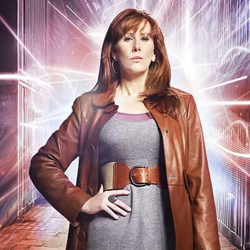

| Home | The Doctors | The Companions | The Villains |
|
|||
|
Donna Noble's HomepageDonna Noble is a fictional character in the long-running British science fiction television series Doctor Who. Portrayed by British actress and comedianCatherine Tate, she is a companion of the Tenth Doctor (David Tennant). Originally appearing in the closing scene of the show's 2006 series and as aspecial guest star in its following Christmas special, "The Runaway Bride", Tate was not expected to reprise her role as Donna. For Series 3 (2007), the Doctor travelled alongside medical student Martha Jones (Freema Agyeman). However, Tate expressed interest in returning to the role, and she returned as Donna for the duration of the Series 4 (2008),[1] and in a subsequent 2009-10 Christmas and New Year's special.[2][3] Within the series' narrative, Donna begins as an outspoken Londoner in her mid-30s, a temp worker from Chiswick whose view of the universe is small in scope. Although she at first finds alien time traveller the Doctor terrifying, their initial encounter leaves her unsatisfied with her normal life; and she decides to travel alongside him when the next opportunity arises. It is the Doctor-Donna who ultimately saves the universe in the Series 4 conclusion, although tragically at the cost of the memories of her travels with the Doctor. In a contrast to the Tenth Doctor's prior companions, who both harboured romantic feelings for him, Donna and the Doctor shared a strictly friendly relationship; and she does not feel the need to prove herself to be allowed to travel with the Doctor, who refers to her as his "best mate". |